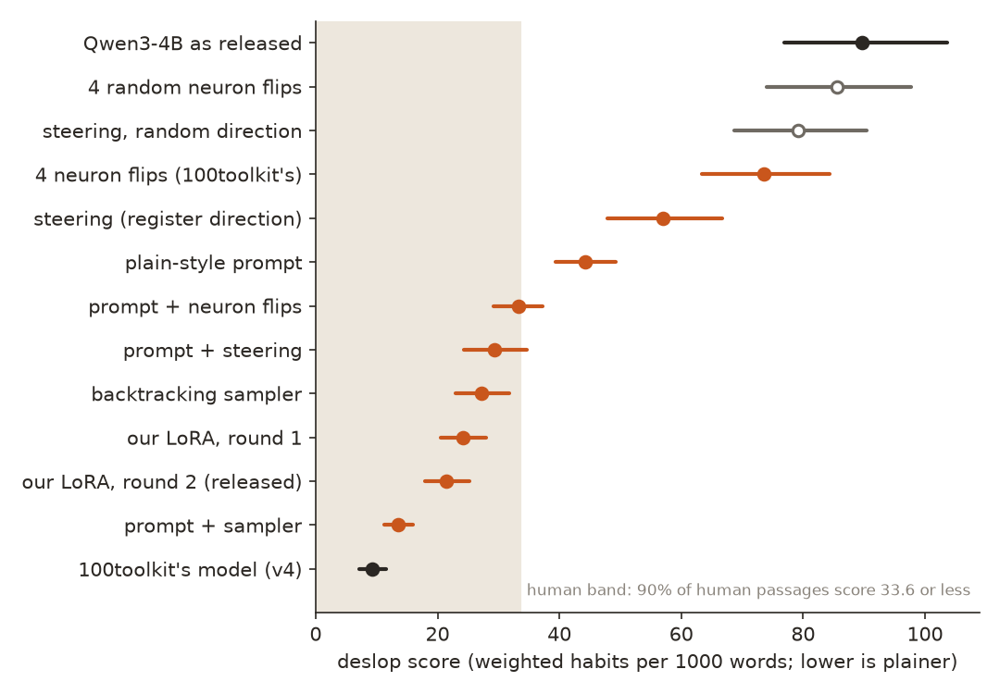
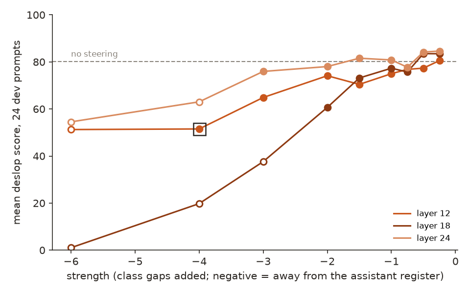
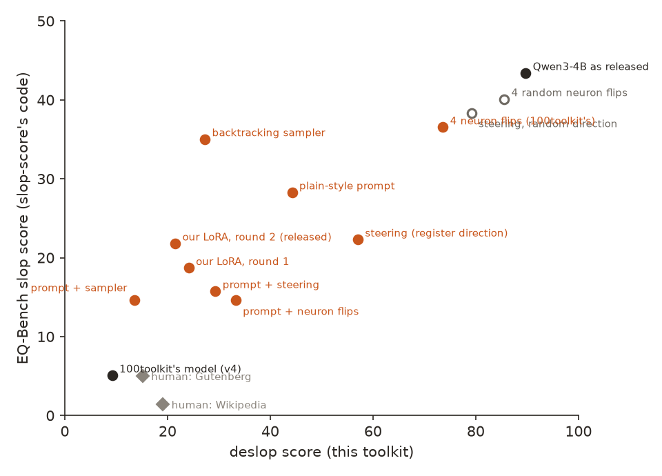
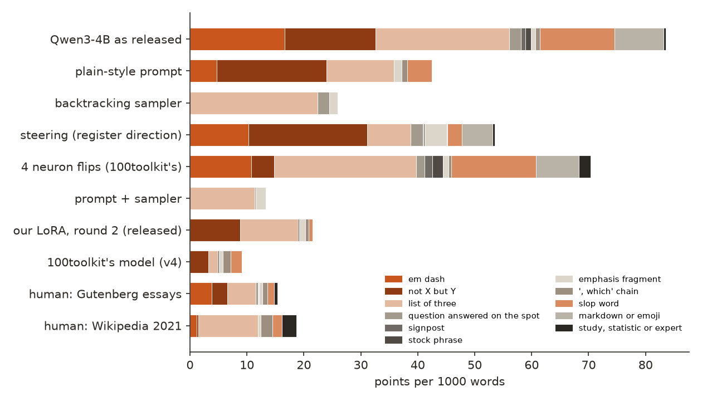
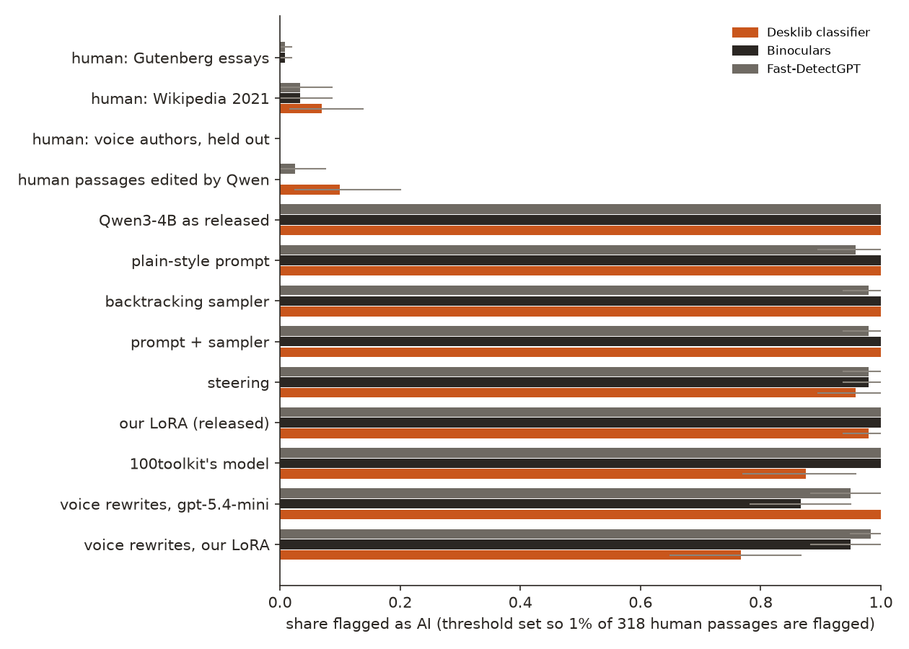
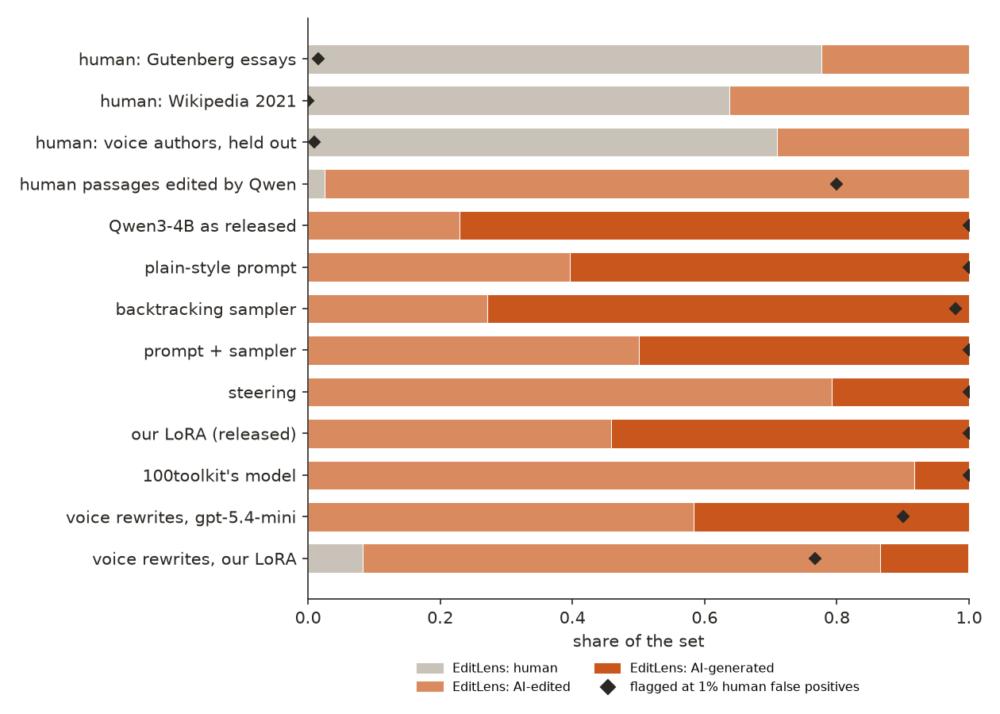
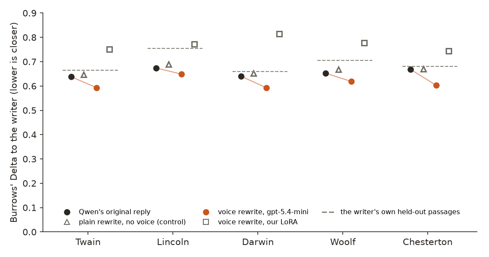

← Research·Experiments··Updated
De-slopping Qwen3-4B: a sampler beats steering, a LoRA keeps most of it, and an LLM judge prefers the slop
Chat models write in a voice people now spot at once: em dashes, “it’s not X, it’s Y”, lists of three, questions they answer themselves. This note tries every way to take that voice out of one small open model (a prompt, a sampler, steering, neuron edits, a distilled LoRA), measures each against human prose, an independent metric and the damage it does, releases the toolkit and the model, and adds two things people asked for next: writing in a chosen person’s voice, and a plain answer to whether AI-text detectors still catch the result.
Summary: the short answer and the key results
In short
What is the cheapest way to take the chat-assistant voice out of a small open model, and what does it cost?
At runtime, a plain-style system prompt plus a backtracking sampler. On 48 prompts never used for tuning, Qwen3-4B-Instruct-2507 scores 89.7 [76.9, 103.7] weighted habits per 1000 words, where 90% of human passages score 33.6 or less. Prompt plus sampler brings it to 13.5 [11.2, 15.9], with 47 of 48 replies inside the human band, without changing a single prediction of the model. Steering along an “assistant register” direction gets only to 57.1 before the text breaks, and moves the model’s predictions on human prose more than any other single method. A LoRA distilled from the prompt-plus-sampler teacher keeps most of the gain with no prompt at all (21.5 [18.0, 25.2]) and passes more task checks than the original, but 100toolkit’s released model goes further (9.2 [7.1, 11.6]). EQ-Bench’s independent slop score agrees on the order (Spearman 0.84). A blind LLM judge, which passed every sanity check, still preferred the original model’s reply over every method’s in most pairs. And none of it hides the text from AI detectors: three open detectors, set to flag 1% of human passages, still flag 85% to 100% of every de-slopped setup’s replies, and EditLens, which measures how much AI edited a text, calls none of them human: de-slopping moves text from “AI-generated” toward “AI-edited”, not toward human. A 4B detector of the same kind, voi-slop-detect-4B, goes further and calls 92% to 100% of every setup’s replies fully AI-generated. Rewriting in a public-domain writer’s voice from three samples moves the text only a little toward that writer.
Key results
| What we tested | Result (48 held-out prompts) | Compared with |
|---|---|---|
| Can a runtime method reach the human band without changing the model? | Yes: prompt + backtracking sampler 13.5 [11.2, 15.9]; 47 of 48 replies in the band; KL drift 0 by construction | Original 89.7 [76.9, 103.7], 3 of 48 in the band; human median 12.8 |
| Does steering do the same job? | Not as well: best fluent setting 57.1 [47.9, 66.7], the largest KL drift of any single method (0.67 nats per token), lexical diversity down from 0.81 to 0.68 | A random direction of the same size: 79.1 [68.7, 90.5] |
| Do 100toolkit’s four neuron flips replicate? | On their target, yes: “not X but Y” falls from 56 to 14 across the 48 replies, at KL 0.002 | Four random neurons flipped: 51 |
| Does a LoRA keep the gain with no prompt? | Mostly: 21.5 [18.0, 25.2], 38 of 48 in the band, task fit 47 of 48 (original 39), KL 0.11, quiz 30 of 30 | 100toolkit’s v4: 9.2 [7.1, 11.6], 47 in the band, task fit 43, KL 0.16 |
| Does an independent metric agree? | On the order, yes: EQ-Bench slop score (slop-score’s own code), Spearman 0.84 over 13 setups. It catches one overfit: the sampler alone cuts our score by 70% but EQ-Bench’s by 19% | Human passages: 5.0 (Gutenberg), 1.4 (Wikipedia); original 43.4 |
| Does a blind LLM judge call the result better writing? | No: every method lost more pairs than it won against the original (win rates 0.04 to 0.47). The judge passed 40 of 40 sanity pairs but could not pick Wikipedia over Qwen as the human writer (0 of 20) | The author, reading 12 pairs blind: preferred our LoRA in 5 of 6, the original over 100toolkit’s model in 4 of 6 |
| Does de-slopping hide text from AI detectors? | No: at thresholds that flag 1% of the 318 human passages, Desklib’s classifier, Binoculars and Fast-DetectGPT flag 85% to 100% of every setup’s replies, 100toolkit’s model and ours included | Human passages: 0% to 7% flagged. Human text lightly edited by Qwen: 0% to 10%, the detectors’ blind spot |
| How much AI does EditLens see in each setup? | Never “human”: 0 of 48 replies for every setup. The share it calls fully AI-generated falls from 77% (original) to 50% (prompt + sampler), 54% (our LoRA) and 8% (100toolkit’s model, 92% “AI-edited”) | Its release reproduced (test-split ternary macro-F₁ 0.881). It also calls 22% to 36% of our older human passages “AI-edited” |
| Does a 4B open detector (voi-slop-detect-4B) agree? | On “never human”, yes: 0 of 48 replies human for every setup, and 100% flagged at its own cut. Not on editing: it calls 92% to 100% of every setup “AI-generated” (100toolkit’s model 44 of 48, the rest AI-edited) | Human passages: 0 of 318 flagged at its own cut, 304 of 318 in its human band. Mirrors: 40 of 40 “AI-edited” |
Can deslop voice write in a given writer’s voice from three samples? | A little: gpt-5.4-mini’s rewrites make the target the nearest of five writers in 17 of 50 cases, and keep all 18 numbers; most still read nearest to Qwen (34 of 50). Our LoRA ignores the samples (9 of 50) | The original replies: 10 of 50 (chance). The writers’ own held-out passages: 52 to 63 of 100 attributed right |
01Introduction
Ask Qwen3-4B for a LinkedIn post about remote work and it opens: “Remote work isn’t just a trend—it’s a transformation in how we approach productivity, flexibility, and work-life balance. 🌍💡” In one sentence that is a contrast frame, an em dash, a list of three and two emoji, and the post ends with five hashtags. The LoRA trained in this note, given the same request and no system prompt, writes: “I believe remote work is a better way to live and work. It gives people more control over their time and helps reduce stress from commutes and office politics.” The first scores 190 on the toolkit’s scale; the second 26.
What is known. These habits are measurable. Kobak et al. counted excess words in 15 million PubMed abstracts the way epidemiologists count excess deaths (“delves” at 28 times its expected rate). EQ-Bench’s slop-score ranks models by over-used words, trigrams and “not X but Y” constructions. Paech et al.’s Antislop removes such patterns at inference time with a backtracking sampler, and in the weights with a preference method trained on the sampler’s choices. And Erik Markus Kannike’s qwen3-4b-deslop took Qwen3-4B from 121 to 12.5 on a style-guide score by distilling a runtime setup (steering, four neuron flips and a plain-style prompt) into a LoRA, with the lesson that the lowest score at first wrote badly until task checks were added.
What is missing. Each source tries one family of method. Nobody has put the prompt, the sampler, steering, neuron edits and distillation on the same model, the same prompts and the same scale, with the same damage checks, and asked an outside metric and an outside judge whether the result is better.
On one model, which way of removing chat-assistant writing habits gets closest to human prose, and what does each cost in drift, task fit and judged quality?
What this note does. It builds the scale, runs every method on 48 held-out prompts, and puts every number beside a control. Its contributions:
- A toolkit,
deslop: a habit score with every match highlighted and a band measured on human prose, task-fit checks, a backtracking sampler, and steering and neuron-edit hooks (pip-installable; the scorer needs only the standard library). - A measured comparison of five methods and their combinations, with KL drift, a quiz, task fit, an independent metric and a blind judge.
- A released model, qwen3-4b-deslop (LoRA, merged weights and a GGUF for Ollama), and an honest comparison with 100toolkit’s, which scores lower.
- A negative result about judges: an LLM judge that passes sanity checks prefers the slop and cannot tell human prose from the model’s.
- A voice tool,
deslop voice(profiles, Burrows’ Delta, blends, a fact-keeping rewrite), tested on five public-domain writers with two attributors checked first. - A detector measurement: EditLens’s “how much AI” model (reproduced on its own test split) and three open detectors on every setup, calibrated on human prose, with a set of human passages lightly edited by the model; plus a Qwen3-4B LoRA detector trained on EditLens’s data, kept private; and voi-slop-detect-4B, an open 4B detector of the same kind, at its own bands.
What would count as an answer. Set before any generation:
- Every method is scored once on 48 held-out prompts; anything tuned (the steering layer and strength, the LoRA recipe) is tuned on training prompts only.
- The score is read against human prose, not against zero, and an independent metric (EQ-Bench’s slop score, with its own code) must order the methods the same way.
- A method must not buy its score with damage: the quiz kept, task fit no worse than the original’s, drift on human prose reported beside a random control of the same size.
- The judge is checked on pairs with a known answer before its verdicts are read.
- Detectors measure; they never choose. No method, setting, teacher reply or rewrite was picked by a detector’s score.
02Setup
2.1 What counts as a habit, and how often people use them
The score counts eleven habits, each a regular expression or word list, and adds their weights per 1000 words. The list follows 100toolkit’s style guide, Wikipedia’s Signs of AI writing, and 100toolkit’s second-round lessons. A habit is a pointer, not a verdict: the last two columns show people use most of them too. The last three columns are occurrences per 1000 words: Qwen3-4B’s replies to the 48 held-out prompts, the Gutenberg essays, and the Wikipedia passages.
| Habit | Example | Weight | Qwen3-4B | Gutenberg | Wikipedia |
|---|---|---|---|---|---|
| Em dash | “a trend—it’s a shift” | 1 | 16.6 | 3.9 | 1.2 |
| Not X but Y | “It’s not a tool, it’s a mindset” | 3 | 5.3 | 0.9 | 0.1 |
| List of three | “faster, cheaper, and better” | 1 | 23.4 | 5.0 | 10.5 |
| Question answered on the spot | “The result? Happier teams.” | 2 | 1.0 | 0.2 | 0.0 |
| Signpost | “Here’s the thing:”, “Let’s dive in” | 2 | 0.4 | 0.0 | 0.0 |
| Stock phrase | “plays a crucial role”, “in today’s fast-paced world” | 2 | 0.5 | 0.0 | 0.0 |
| Emphasis fragment | “Every time.” inside a paragraph | 1 | 0.9 | 0.6 | 0.5 |
| “, which” chain | “…the desk, which freed the window” | 1 | 0.8 | 0.9 | 2.0 |
| Slop word | delve, tapestry, seamless, resilience | 1 | 13.1 | 1.1 | 1.7 |
| Markdown or emoji | headings, bold, bullets, #hashtags, 🚀 | 1 | 8.6 | 0.0 | 0.0 |
| Study, statistic or expert | “According to a 2023 study, 68%…” | 2 | 0.2 | 0.3 | 1.3 |
The word list has 89 entries: 79 from Kobak et al., Wikipedia’s guide and EQ-Bench’s list, and 10 words Qwen3-4B used across many topics in its replies to the training prompts but rarely or never in the human passages (“resilience”: 51 uses across 24 topics, none in the human passages; “quiet”: 161 uses across 41 of 48 topics, 8 in the human passages). Words over-used only because the human passages are old (“digital”, contractions) or because of the topic were left out.
2.2 A score by hand
Take these two sentences, 17 words: “Remote work isn’t just a trend—it’s a revolution. Here’s the thing: flexibility, autonomy, and trust matter.” They hold one not-X-but-Y (3 points), one em dash (1), one signpost (2) and one list of three (1): 7 points in 17 words, which is 7 × 1000 / 17 = 412 per 1000 words. A plain rewrite, “Remote work has changed how we work. Flexibility and trust matter most.”, holds none of them and scores 0. Real replies of about 250 words mix both kinds of sentence, which is how the original model lands near 90.
2.3 Prompts and human prose
| Set | What it is | Size | Used in |
|---|---|---|---|
| Held-out prompts | 10 topics (remote work, public libraries, sleep…) × blog, LinkedIn, explainer, opinion; plus 4 emails and 4 personal reflections on the same topics. Each asks for a length (120 to 250 words) | 48 | Every number in section 4 |
| Training prompts | 48 other topics (coffee, chess, beekeeping…) × the same six genres | 288 | The direction, the slop-word additions, the teacher data |
| Dev prompts | The first four training topics × six genres | 24 | Choosing the steering setting and the LoRA recipe |
| Human passages | 260 passages of 150 to 400 words from 13 Project Gutenberg books of essays, memoirs and explanation (Chesterton, Woolf, Twain, Addams, Russell…), public domain in the US; 58 passages from 29 Wikipedia articles as they stood on 1 June 2021, CC BY-SA 3.0 | 318 | The human band; KL drift (24 of them) |
| Quiz | 30 short factual questions (capitals, dates, arithmetic), scored by whole-word match | 30 | Damage check |
The human band: on the 318 passages, the score has a median of 12.8 (Gutenberg 12.4, Wikipedia 17.1) and a 90th percentile of 33.6. A reply is in the band when it scores 33.6 or less. Neither human source is modern conversational prose; section 7 says what that leaves out.
2.4 The methods
| Method | What changes | Settings |
|---|---|---|
| Plain-style prompt | A system prompt: do the task first (state a position, write in the first person, greet), then a list of habits to avoid (Appendix) | Fixed before any run |
| Backtracking sampler | Which samples are kept. When an em dash, not-X-but-Y, a signpost, a stock phrase, a slop word, markdown, an invented claim or “, which” completes, step back to the token where it began, ban that token there, sample again (up to 300 backtracks per reply) | The model’s own sampling settings |
| Steering | Adds a direction to the residual stream at one layer, at every position. The direction is steerlab’s difference of means between the model’s own replies to the 288 training prompts and its replies under the plain-style prompt | Layer 12 of 36, strength −4 class gaps (chosen on dev) |
| Neuron flips | Multiplies four MLP neurons by −1: L32.N4852, L33.N348, L28.N1121, L32.N5418, the ones 100toolkit found for “not X but Y” | As published |
| LoRA distillation | The weights. A teacher (prompt + sampler) writes three replies per training prompt; replies that pass every check and score under the human median are kept; a rank-16 LoRA on every projection learns them from the bare prompt | Round 2 recipe, chosen on dev: all 557 passing replies outside the dev topics, 2 epochs |
| 100toolkit’s v4 | erikkannike/qwen3-4b-deslop-v4, merged weights with its four flips baked in | As released |
Every run samples one reply per prompt at the model’s own settings (temperature 0.7, top-p 0.8, top-k 20, no repetition penalty), seed 0, up to 512 new tokens, with no system prompt unless the method is a prompt.
2.5 Why Qwen
- Open weights under Apache-2.0, so a fine-tuned copy can be released, merged weights and all.
- A size ladder: under 1B, 4B, 8-9B, 30B and up, so the same recipe can be repeated on a bigger model without changing tools.
- The same base as 100toolkit’s qwen3-4b-deslop (Qwen3-4B-Instruct-2507), so the two compare directly on the same prompts.
- Strong instruction following at 4B, which the plain-style prompt and the teacher depend on.
- Mature tooling: transformers, PEFT, llama.cpp and GGUF, Ollama, MLX; and steerlab already supports Qwen (directions, the layer explorer, Qwen-Scope features).
- Small Qwen LoRAs do well on writing-style tasks. An unpublished replication shared with the author trained LoRA detectors on Qwen3.5 for EditLens’s task and reached ternary macro-F₁ 0.909 at 4B on its test split, level with the EditLens 24B models (0.904), though weaker out of domain (0.665 calibrated, 0.812 frozen, against 0.850 on the Llama split).
- Trade-offs: Qwen has its own fingerprint (in our counts it over-uses “quiet”, “resilience” and “meaningful”), its pretraining mixes Chinese and English heavily, and its chat template advertises a thinking mode, so Ollama shows an empty “Thinking…” line before replies.
2.6 Voices and detectors
Voices. Five writers whose work is public domain in the US, from Project Gutenberg: Mark Twain (essays; Life on the Mississippi), Abraham Lincoln (papers and letters, 1858-1865), Charles Darwin (The Voyage of the Beagle; On the Origin of Species), Virginia Woolf (The Common Reader, 1925) and G. K. Chesterton (two essay collections). For each, 30 paragraphs of 120 to 400 words build the profile and supply the examples; 20 more are held out. A sixth profile, “qwen”, comes from the original model’s replies to 30 training prompts. A profile holds the rates of the 150 most frequent function words, sentence and paragraph lengths, punctuation per 1000 words and favourite openers. Burrows’ Delta is the mean absolute difference between a text’s function-word z-scores and a profile’s, with z-scores taken against the 318 human passages; lower is closer.
The test: 10 of the original model’s held-out replies, each rewritten toward each of the five writers and a 50/50 blend of Twain and Darwin, by gpt-5.4-mini and by our LoRA, from the same messages (three samples, the profile in words, the text, an instruction to keep every number, name and negation). A control rewrites the same 10 texts in plain style with no samples. Two attributors were checked first on the held-out passages (100 by the writers, 30 Qwen replies): nearest profile by Delta got 82 of 130 right (52 of 100 writer passages), and a logistic regression on the same features 93 of 130 (63 of 100); chance is 1 in 6.
Detectors. Pangram’s and GPTZero’s published methods suggested the setup: score per text, fix the false-positive rate on human writing first, and include “mirrors”, human texts touched by a model. Three open detectors: Desklib’s classifier (DeBERTa-v3-large fine-tuned on RAID, MIT licence), Binoculars and Fast-DetectGPT (both on Falcon-7B and Falcon-7B-instruct, as in their papers). Each gets a threshold that flags 1% of the 318 human passages; the published thresholds are reported too. Known answers: the 318 human passages and the 100 held-out writer passages (should not be flagged), the original model’s replies (should be), and 40 mirrors, human passages the original model lightly edited for clarity.
EditLens (Thai et al., ICLR 2026) asks a finer question than “AI or not”: how much did AI change this text? It is trained on human texts, AI edits of them at many strengths and fully generated texts, with labels from how far each moved in meaning. The released editlens_roberta-large sorts a text into four buckets of AI editing; its score is the expected bucket, from 0 (untouched) to 1. The authors’ ternary protocol calibrates two cut points on their val split, and this note uses them as published: below 0.096 is human, above 0.998 is AI-generated, between is AI-edited. A third cut flags 1% of our human passages. Licence: the EditLens model, code and data are CC BY-NC-SA 4.0, non-commercial; this note uses them for research, commits none of their data, and releases nothing trained on it. Access was granted on request on 10 November 2026; Meta’s approval for the Llama-3.2-3B base of the second EditLens model is pending, so that model is not run.
voi-slop-detect-4B (VoightKampffLabs, released 11 November 2026, Apache-2.0) is a Qwen3.5-4B with a one-output classification head; its score, from 0 to 1, is the share of a text written by an LLM. It reads the first 512 tokens, with fenced code blocks emptied (none of our texts has one). It ships its own cut points: below 0.15 is human, 0.75 or above is AI-generated, between is AI-edited, and a yes/no flag at 0.385, which its authors fitted to flag 1% of their validation human texts. This note uses those as shipped, plus a cut that flags 1% of our human passages. The model is pinned to one revision (b23f86f) and scored the same 1,212 texts as the other detectors; nothing was regenerated.
2.7 Measures
- Deslop score: weighted habits per 1000 words (section 2.1), averaged over the 48 replies.
- In the band: a reply scoring at or below 33.6, the human 90th percentile.
- EQ-Bench slop score: the composite from slop-score’s own JavaScript (60% slop words, 25% not-x-but-y, 15% slop trigrams, scaled by its leaderboard’s range), computed on all 48 replies joined, as its leaderboard does. Run on slop-score’s published Qwen3-4B outputs, our wrapper gives 62.2, the leaderboard’s value.
- Task fit: every check for the genre passes: length between 0.5 and 1.6 times the request; a position in the first two sentences of an opinion piece; a greeting in an email; at least three first-person words in a reflection.
- Fluent (for tuning only): at least 40% of the requested length, at most 10% of sentences starting in lower case, no four-word phrase used more than three times.
- KL drift: on 24 human passages given as the assistant’s reply, the mean over tokens of KL(method ‖ original) between next-token distributions, in nats. It asks how far the method moves the model’s predictions on text a person wrote. The sampler’s is 0 by construction: it changes no prediction.
- Judge win rate: a method wins a prompt when the judge picks its reply over the original’s in both orders, loses when it picks the original in both, and ties otherwise; a tie counts half. 0.5 means level.
Intervals are 95% percentile bootstraps over the 48 prompts (10,000 resamples); differences from the original are paired by prompt.
03How the study was run
- Goal and design written first: one model, the methods above, the held-out set, the human band, the damage checks, EQ-Bench as the outside metric, a blind judge.
- Scorer and band: 11 detectors with unit tests (41 tests, including human sentences that must score zero); 318 human passages scored.
- Inputs: the original model and the plain-style prompt on the 288 training prompts (576 replies), for the direction and the slop-word additions. The scorer was frozen after this step.
- Steering: the direction at layers 12, 18 and 24; a sweep of 27 settings plus none on the 24 dev prompts (672 replies).
- Teacher and LoRA: 864 teacher replies (3 per training prompt), 608 kept; round 1 trained on 260 (the best per prompt); round 2 compared three recipes, trained without the dev topics, on dev.
- Held-out runs: 13 setups × 48 prompts = 624 replies, each scored once.
- Added after the first publication, at the user’s request: the voice test (250 writer passages, 130 rewrites, $0.19 of API) and the detector measurement (1,212 texts on one GPU), and a new cover.
- Damage and judge: KL on 24 passages and the 30-question quiz per setup; the judge’s 40 known-answer pairs, then 12 setups × 48 prompts × 2 orders (1,152 verdicts); 12 pairs read by the author with labels hidden.
| Fixed before any trial | Changed after reading replies |
|---|---|
| The model; the 48 held-out and 288 training prompts; the plain-style prompt; the habit list and weights (frozen before any held-out reply was scored); the human sources; the sampler’s banned habits; the steering layers and the rule for choosing a setting; the teacher, its filter and the LoRA recipe for round 1; the damage checks; the judge’s question and its known-answer check | The steering sweep first stopped at −1.5 class gaps, where every setting was still fluent and the best sat on the grid’s edge; strengths −2 to −6 were added. The first sampler run used an earlier version of the detectors (before an abbreviation fix and the data-driven words); it was rerun after the scorer was frozen, and the rerun is reported. LoRA round 2 was added after round 1 kept “not X but Y” that its teacher never wrote; its recipe was chosen on dev, not on held-out prompts. The “reads as human” judge question was added after the first verdicts, and dropped when the judge failed its check. The voice and detector sections were added after the first publication; their designs (writers, inputs, rewriters, thresholds at 1% human false positives) were fixed before any rewrite or detector score was read, and the relative attribution test (nearest of five writers) was added after seeing that the writers’ own passages sit farther from their profiles than Qwen’s replies do |
Conditions: Qwen3-4B-Instruct-2507 in bfloat16 with Hugging Face transformers 5.20 on Modal (an L40S for most of it, an A10G or A100 when none was free, an A100 for the detectors, an H100 for the Qwen detector and an A10 for voi-slop-detect-4B, with transformers 5.22), $13.50 of GPU in all; EditLens’s RoBERTa-large ran on the laptop; each LoRA trained in a few minutes; the GGUF export on CPU. Scoring, EQ-Bench (Node.js) and figures on a laptop. The judge, gpt-5.4-mini through OpenAI’s API, used 905k input and 150k output tokens across all checks and runs, about $1.50.
04Results
Eight findings:
- 4.1 A plain prompt plus the sampler reaches the human band at runtime, with no drift.
- 4.2 Steering is the costliest way to do it; 100toolkit’s neuron flips work on their target only.
- 4.3 A distilled LoRA keeps most of the gain in the weights; 100toolkit’s goes further.
- 4.4 EQ-Bench’s score agrees on the order, and catches the sampler fitting our list.
- 4.5 Each method removes different habits, and the prompt adds one.
- 4.6 A blind LLM judge prefers the original, and cannot tell human prose from Qwen’s.
- 4.7 AI detectors still flag every de-slopped setup.
- 4.8 A voice rewrite moves text a little toward a writer, not to them.
4.1 A plain prompt plus the sampler reaches the human band at runtime, with no drift
The prompt alone halves the score (89.7 to 44.2 [39.4, 49.3]); the sampler alone takes it to 27.3 [22.9, 31.8]; together they reach 13.5 [11.2, 15.9], about the human median, with 47 of 48 replies in the band. The sampler steps back 40 times per reply on average without the prompt and 8 times with it; one sampler reply of 48 hit the 512-token cap. Because it only chooses among the model’s own samples, its KL drift is zero, and the quiz stays at 30 of 30. Its costs are speed (one token at a time, with rewinds) and a ceiling: it can only ban what the detectors see (section 4.4).

Task fit stays high with the prompt (47 of 48 replies pass every check, against the original’s 39). The original model fails on opinion pieces: it writes a balanced essay with no position in 9 of 10. The plain prompt fixes that in all but one. The sampler alone fails all 10, because nothing in it asks for a position.
4.2 Steering is the costliest way to do it; 100toolkit’s neuron flips work on their target only
The register direction lowers the score, but only to 57.1 [47.9, 66.7] at the strongest setting that stayed fluent on dev (layer 12, −4 class gaps), against 79.1 for a random direction of the same size. Its KL drift on human prose, 0.67 nats per token, is the largest of any single method, and its lexical diversity drops from 0.81 to 0.68. Steering does change the register: at layer 12 the replies get shorter sentences and simpler words (“Put the filter in the machine, add ground coffee, and turn it on”). But it raises “not X but Y” (section 4.5), and one step stronger, or at layer 18, replies stop being fluent (Figure 2). With the prompt added, steering reaches 29.3, still worse than the prompt plus the sampler, at the largest drift measured (1.32).

100toolkit’s four neuron flips do what they were found for: across the 48 replies, “not X but Y” falls from 56 to 14 (four random neurons flipped: 51), and em dashes from 175 to 115, at a KL drift of 0.002. They leave the rest of the voice alone, so the overall score only moves from 89.7 to 73.6. Replies with an invented study or statistic rose from 2 to 11 of 48, mostly “Studies show”; with 48 prompts that is a pointer, not a finding.
4.3 A distilled LoRA keeps most of the gain in the weights; 100toolkit’s goes further
Trained on the prompt-plus-sampler teacher and given no prompt, our round-2 LoRA scores 21.5 [18.0, 25.2], with 38 of 48 replies in the band, task fit 47 of 48, KL drift 0.11 and the quiz at 30 of 30. 100toolkit’s v4 scores 9.2 [7.1, 11.6], with 47 in the band, task fit 43 and KL 0.16. Their model is plainer by our measure and by EQ-Bench’s (5.1 against our 21.8); ours moves the model’s predictions on human prose less and fails fewer task checks (it states a position in 9 of 10 opinion pieces; theirs in 5).

The student does not copy all of its teacher. The teacher’s kept replies averaged 3.6 and held no “not X but Y” at all (the sampler bans it), yet round 1 wrote it 3.4 times per 1000 words, about two thirds of the original’s 5.3. Round 2, trained on all passing teacher replies rather than the best one per prompt, scored 16.2 on dev against 22.8 for round 1’s recipe, and 21.5 on the held-out prompts against round 1’s 24.1: a small gain inside the intervals. The habit comes back from the bare prompt, which the teacher only ever answered with its system prompt in place.
4.4 EQ-Bench’s score agrees on the order, and catches the sampler fitting our list
Across the 13 setups, EQ-Bench’s slop score and ours rank the methods alike (Spearman 0.84). The exception is the sampler alone: it cuts our score by 70% (89.7 to 27.3) and EQ-Bench’s by 19% (43.4 to 35.0). The sampler bans the words and patterns our detectors know; EQ-Bench’s list of slop words is different, so it sees what the sampler let through. This is the case the outside metric was added for: a method tuned to a regex looks better on that regex than on anyone else’s. The setups that change the model’s register (the prompt, steering, the LoRAs) move both scores together.

On EQ-Bench’s scale, 100toolkit’s model (5.1) sits at the level of the Gutenberg essays (5.0); the best runtime setup (14.6) and our LoRA (21.8) sit between the human passages and the original model (43.4).
4.5 Each method removes different habits, and the prompt adds one
Told not to use “not X but Y”, the model uses it more: 77 times across the 48 replies with the plain prompt, against 56 without. The other habits fall: em dashes from 175 to 57, slop words by two thirds, markdown and emoji to none. Steering also raises the contrast frame (20.9 points per 1000 words against 16.0). The sampler removes everything it bans and leaves lists of three, which it does not ban; lists of three are then most of what is left in every runtime setup, at about the rate of Wikipedia’s prose. Figure 5 shows where each setup’s points come from.

Figure 6 lets you read the replies themselves, with every habit the toolkit finds marked.
The interactive reply viewer needs JavaScript. The replies it shows are in results/gen/, one file per setup, such as base.jsonl.
Figure 6. Held-out replies from seven setups on 12 prompts (two per genre), with every habit the toolkit finds highlighted; hover a highlight for its name. Data: viewer.json, written by make_figures.py from the saved replies.
4.6 A blind LLM judge prefers the original, and cannot tell human prose from Qwen’s
For every method, gpt-5.4-mini picked the original model’s reply as better writing for the request in more pairs than the method’s. Win rates run from 0.04 (prompt + steering) to 0.47 (four random neurons flipped, whose replies barely differ from the original’s); our LoRA 0.22 [0.13, 0.32], prompt + sampler 0.13 [0.05, 0.21], 100toolkit’s model 0.06 [0.01, 0.14].
The judge was checked first. Against the same reply with its sentences shuffled, and against a reply written for another prompt, it picked the original in both orders 40 times out of 40. It reads coherence and relevance. The near-identical random-neuron replies drew 31 ties in 48, as they should.
An exploratory second question, added after these verdicts, asked which reply “reads more like it was written by a skilled human writer”. Its check failed. Given a 2021 Wikipedia passage and the original model’s explainer on the same topic, gpt-5.4-mini picked the Wikipedia passage in both orders 0 times in 20; the larger gpt-5.4 did so 7 times, with 8 ties. A judge that cannot pick a Wikipedia article over Qwen as the human writer cannot grade de-slopping, so that question was not run on the methods.
As a small check of the main question, the author read 12 pairs (6 of our LoRA, 6 of 100toolkit’s model, each against the original) with the labels hidden and the order shuffled. The judge and the author agreed on 6 of 12. The author preferred our LoRA in 5 of 6 (the judge in 2), and the original over 100toolkit’s model in 4 of 6 (the judge in 6 of 6). The author was not blind to style, which gives away which reply is which, and 12 pairs is a small sample (hand_read.json). Read side by side, 100toolkit’s replies are plain but flat: one paragraph, short declarative sentences, some invented anecdotes. Ours keep paragraphs and more of the original’s content. The original’s are polished and generic, and the judge rewards the polish.
4.7 AI detectors still flag every de-slopped setup
At thresholds that flag 1% of the 318 human passages, the three open detectors flag 85% to 100% of the replies of every setup in this note. 100toolkit’s model, the plainest by both habit scores, is flagged by Desklib’s classifier in 88% of replies [77, 96] and by Binoculars and Fast-DetectGPT in 100%; our LoRA in 98%, 100% and 100%; prompt plus sampler in 100%, 100% and 98%. Removing the habits a reader notices does not remove what a detector measures: word-by-word predictability and the statistics a classifier learned. Pangram reports catching 98.83% of text from 13 commercial “humanizers”; nothing here argues with that.

The detectors were checked first. On the 100 held-out passages by the voice writers, none flags a single one; on Wikipedia, at most 7% [2, 14]; on the original model’s replies, 100%. Their blind spot is the mirror set: human passages that the original model lightly edited are flagged at 10% [3, 20] by Desklib, 0% by Binoculars and 3% by Fast-DetectGPT. That is the case EditLens was built for: a text whose content is human and whose surface is not (it catches them, below). At its published threshold of 0.5, Desklib also flags 19% [9, 29] of the Wikipedia passages and 38% [23, 53] of the mirrors, which is why the calibrated thresholds are the ones reported.
EditLens sees every de-slopped setup as AI, and sees de-slopping as editing. Its release was checked first: run here, it reproduces the authors’ own released scores on their test split (correlation 0.999997) and their ternary protocol gives macro-F₁ 0.881 on the test split and 0.859 on the out-of-domain Llama split, the same as their released scores (the paper’s headline, 0.904, is for a 24B model). On this note’s texts (Figure 8), it calls 0 of 48 replies human in every setup. What changes is the kind of AI: the original model’s replies are 77% [65, 88] “AI-generated”; with the prompt and the sampler, 50% [35, 65]; our LoRA, 54% [40, 69]; steering, 21% [10, 33]; and 100toolkit’s model, 8% [2, 17], with 92% “AI-edited”. At a threshold that flags 1% of our human passages, it flags 98% to 100% of every setup. Unlike the other three detectors, it also catches the mirrors: 97% [93, 100] “AI-edited”, 80% [68, 93] flagged at the 1% threshold.

The authors’ cut points are strict about human text from another era: 22% [17, 27] of the Gutenberg passages, 36% [24, 48] of the Wikipedia ones and 29% [20, 38] of the voice writers’ passages land in “AI-edited”, though none in “AI-generated”. Old essays and encyclopedia prose are out of the domain EditLens was trained on (Reddit stories, news, educational web text, reviews), so for a verdict on human text the 1%-human threshold is the safer one.
A small Qwen does this task well. Trained with the authors’ Llama recipe (four buckets, LoRA rank 8, one epoch) on 20,000 of EditLens’s 59,991 training texts, a Qwen3-4B LoRA detector reached ternary macro-F₁ 0.924 on the test split and 0.941 on the Llama split, under the same protocol, in 31 minutes on one H100. That is above the released RoBERTa-large (0.881, 0.859) and the paper’s 24B headline (0.904 in domain, 0.850 on the Llama split), and in line with the unpublished replication cited in section 2.5 (0.909 in domain), though not with its weaker out-of-domain result. The training subset shares no source text with either test split (5 of about 6,000 test texts appear verbatim in training). The adapter is kept private: it is trained on non-commercial data and was used only to measure.
A released 4B detector agrees that nothing here reads as human, but not that de-slopping reads as editing. voi-slop-detect-4B was checked on our human text first: at its own flag cut (0.385) it flags 0 of the 318 human passages [0, 0] and 0 of the 100 voice writers’ passages, so its shipped cut holds on our data; its human band holds 304 of the 318 (Wikipedia 49 of 58). At that cut it flags 100% of the replies of every setup, and the cut that flags 1% of our human passages (0.237) gives the same. Its bands (Figure 9) call 0 of 48 replies human in every setup and nearly all of them AI-generated: 48 of 48 for the original model, prompt plus sampler and our LoRA, 47 for steering, and 44 for 100toolkit’s model (92% [83, 98], the other 4 AI-edited), where EditLens put 77%, 50%, 54%, 21% and 8%. Both put all of the mirrors in AI-edited (40 of 40 here), though at its own cut it flags only 62% [48, 78] of them. The replies are fully generated, so on this question its reading is the accurate one; EditLens’s shift toward “AI-edited” likely follows surface style rather than how the text was made. Its card reports one training seed, and each setup here has 48 replies.
![Stacked horizontal bars of voi-slop-detect-4B bands. Human Gutenberg, Wikipedia and voice-author passages are 84% to 98% human, the rest AI-edited; human passages edited by Qwen are all AI-edited. Every model setup has no human share and is 92% to 100% AI-generated; 100toolkit's model is 92% AI-generated and 8% AI-edited; gpt-5.4-mini's voice rewrites are 70% AI-generated. Diamonds for the 1%-human threshold sit at 100% for every setup and the mirrors; circles for its own cut at 100% for every setup and 62% for the mirrors.](figures/voi_slop.png)
Voice rewrites by gpt-5.4-mini get through a little more often: Binoculars flags 87% [78, 95] of them, Fast-DetectGPT 95% [88, 100], Desklib all of them. None of this was a target: no setting or reply in this note was chosen by a detector’s score.
Episode 2 of this series, Rebuilding an AI-text detector from its model card, rebuilds voi-slop-detect-4B’s training data with open-weight models and compares a 1.7B trained on it with the 4B on the same benchmark rows.
4.8 A voice rewrite moves text a little toward a writer, not to them
Rewritten by gpt-5.4-mini from three sample passages, the original model’s replies end up nearest their target writer, among the five, in 17 of 50 cases; the unrewritten replies would be in 10 of 50 by construction (one nearest writer each, five targets). Against all six profiles, 34 of 50 rewrites still sit nearest to Qwen, and only 6 (by Delta) or 12 (by the logistic regression) nearest to the target. The writers’ own held-out passages are attributed right 52 and 63 times in 100.

Figure 10 shows why the absolute distance misleads. gpt-5.4-mini lowers the Delta to the target in 45 of 50 rewrites, but each writer’s own passages sit farther from their profile than Qwen’s original replies do: a 250-word passage by a real writer is idiosyncratic, while Qwen’s even prose sits near the middle of everything. A lower Delta alone therefore says “blander” as easily as “more like Twain”, and the relative test, which writer is nearest, is the fair one. The plain rewrite with no samples moves nothing toward any writer (all 10 still nearest Qwen), so the small shift comes from the samples, not from de-slopping.
gpt-5.4-mini kept every number (18 of 18) and passed the fact check in 49 of 60 rewrites, but used more negations than the originals (280 against 192), so a few claims may have changed polarity and need reading. Its rewrites score 48.4 on the habit scale (13 of 60 in the human band), no plainer than the no-voice control (47.0). The blend toward Twain and Darwin landed nearer the blend than either writer in 4 of 10. Our LoRA, trained to answer bare prompts, ignored the samples: its rewrites stay in its own plain voice (target nearest in 9 of 50, chance), drop every number (0 of 18) and pass the fact check in only 30 of 60. For voice work, use an instruction-following model and check the facts.
05Compared with prior work
| 100toolkit qwen3-4b-deslop | Antislop (Paech et al.) | EQ-Bench slop-score | This note | |
|---|---|---|---|---|
| Score read against human prose | ✓ (“usually under 15”) | ✓ (frequency ratio to human text) | ✓ (a human baseline on its leaderboard) | ✓ (a band from 318 licensed passages, per source) |
| Prompt, sampler, steering, neurons and weights on one model | Steering, neurons, prompt, LoRA | Sampler and preference training | Measurement only | ✓ all five, and combinations |
| Random control for steering and neurons | ✗ | n/a | n/a | ✓ |
| Independent metric | ✗ (its own score) | ✓ (writing benchmarks) | n/a | ✓ (EQ-Bench’s code) |
| Drift and capability checks | ✓ (KL on 22 passages, 30-question quiz) | ✓ (GSM8K, MMLU) | ✗ | ✓ (KL, quiz, task fit, MATTR) |
| Blind quality judgment | ✗ (named as a next step) | ✓ (LLM-judged writing quality) | ✗ | ✓ (position-swapped judge, checked; it prefers the original) |
| Released model | ✓ (LoRA, merged, GGUF) | ✓ (FTPO models) | n/a | ✓ (LoRA, merged, GGUF) |
| Lowest slop reached on Qwen3-4B | 12.5 on its own score; 9.2 on ours | Not run on Qwen3-4B | Qwen3-4B scores 62.2 on its prompts | 21.5 for our LoRA; 13.5 at runtime |
Pangram 4 and GPTZero score text sentence by sentence (or token by token), separate “AI-assisted” from fully generated text, calibrate their false-positive rate on large human sets and train on “mirrors” of the human texts they get wrong. This note borrows the evaluation habits (per-text scores, a human false-positive set, mirrors) with small open detectors; it does not test the commercial ones. EditLens (Thai et al., ICLR 2026), the open method closest to the mirror question, is run on every set here (section 4.7); it catches the mirrors that the other open detectors miss. voi-slop-detect-4B, a 4B open model for the same question, is run the same way.
The 100toolkit model is the stronger release on the habit measures, here as on its own blog; our numbers for it come from our prompts and our scorer, not theirs. FTPO, Antislop’s training method, was not tried here.
06Implications for AI safety
The judge result matters beyond style. Reward models and LLM judges are how models are tuned and graded, and this one, which passes the usual sanity checks, preferred the assistant voice over plainer replies that did the task better: it chose the original’s balanced essays over replies that stated the position the prompt asked for. Training against such a judge would push models toward the voice people are learning to distrust, and grading with one would hide it. The second check showed the same judge cannot pick a 2021 Wikipedia article over the model’s explainer as the human one. The other half of the lesson is about grading a fix with the tool that defined it: the sampler looked more than three times better on our regexes than on EQ-Bench’s.
Risk: low. The work changes the style of a small open model; nothing in it is aimed at detector evasion, the score is not an AI detector, and the open detectors measured here still flag almost every de-slopped reply. A plainer voice does make model text harder for people to spot by its habits, which is a reason to disclose AI assistance where it is expected and to label model text by where it came from rather than by how it sounds. The voice tool is for one’s own writing and public-domain authors; imitating a living writer needs their consent.
The recommendation in one sentence: when you change a model’s voice, score it with an independent metric as well as your own, and check your judge on human prose before trusting what it says about style.
07What this does not show
- 48 prompts, one sample each. The intervals separate the big moves, not the close ones: round 1 and round 2 of the LoRA overlap, and so do the sampler and the LoRAs.
- A regex is not taste. The detectors miss paraphrases. The best runtime setup still writes “It’s not just a temporary fix for the pandemic. People are more productive”, which no pattern here catches. A low score means fewer of these eleven habits, not good writing.
- The human band is old and encyclopedic. Gutenberg essays use more em dashes than people do online today, and Wikipedia uses more lists of three. No modern blog posts, emails or LinkedIn posts with clear licences were found, so the band may sit higher than casual human prose.
- The quiz hit the ceiling. Every setup answered 30 of 30; that shows nothing broke, not that nothing degraded. No reasoning or long-context benchmark was run.
- One judge, one question. gpt-5.4-mini’s taste is one taste. The human read was 12 pairs by one reader who could guess the setups from the style.
- Choices made after reading. The steering grid was extended, and LoRA round 2 was added, after seeing results (section 3); both choices were made on dev prompts, and both rounds are reported.
- Short texts for stylometry. Burrows’ Delta is noisy on 250-word texts: even the writers’ own passages are attributed right only about half the time. The voice result is about 10 texts per writer and five writers from one era.
- Detectors. Three open detectors on texts of 120 to 400 words, EditLens’s RoBERTa-large and voi-slop-detect-4B (one training seed, per its card); not the commercial ones (Pangram, GPTZero) and not EditLens’s stronger 24B model. EditLens’s published cut points call a quarter to a third of our older human prose “AI-edited”. The calibrated thresholds come from older and encyclopedic human prose; on modern casual prose the false-positive rate may differ.
- Not tried. FTPO, DPO against the original’s replies, a base-model teacher, larger models, other languages, long documents.
08Use it and reproduce it
Score your own text (no dependencies), or run the model:
pip install "steerlab-deslop @ git+https://github.com/albertlieyingadrian/steerlab#subdirectory=packages/deslop"
deslop score draft.txt
deslop voice profile my-essays/*.txt --name me -o me.json
deslop voice rewrite draft.txt --voice me.json --samples my-essays/a.txt my-essays/b.txt --api-model gpt-5.4-mini
ollama run hf.co/albertlieadrian/qwen3-4b-deslop-GGUF:Q4_K_MRecompute every number and figure from the saved replies (needs Node.js; slop-score is cloned at a pinned commit):
experiments/deslop/reproduce.sh --scoresRerun from scratch: a Modal account (about 4 GPU-hours, about $13), an OpenAI key for the judge, the voice rewrites and the covers (about $2.70), and access to EditLens’s model and data (non-commercial, on request):
experiments/deslop/reproduce.sh --dry-run # lists every command
experiments/deslop/reproduce.sh09What’s next
- A preference step against the student’s remaining habits: FTPO on the sampler’s backtrack points, or DPO with the original’s replies as the rejected side.
- A human panel instead of an LLM judge, blind to setup, including the paraphrases the regexes miss.
- A modern human baseline with clear licences, such as public-domain government writing and CC-licensed newsletters.
- The same comparison on a 7B to 8B model, where 100toolkit plans to go next.
- EditLens’s Llama-3.2-3B model on the same sets, once Meta approves access to its base; and a voice test on longer texts and the reader’s own writing.
10Questions and answers
What is the easiest way to make a small model write less like a chatbot?
A system prompt that asks for the task first and lists the habits to avoid, plus a backtracking sampler that rewinds when a banned pattern appears. On Qwen3-4B that took the habit score from 89.7 to 13.5 per 1000 words, about the human median, without changing the model.
Does activation steering remove AI writing style?
Partly. An “assistant register” direction at layer 12 lowered the score from 89.7 to 57.1 before replies stopped being fluent, and moved the model’s predictions on human prose more than any other single method. A prompt or a sampler does more for less.
Is there a de-slopped Qwen3-4B I can run?
Two: 100toolkit’s erikkannike/qwen3-4b-deslop-v4 (score 9.2 here) and this note’s albertlieadrian/qwen3-4b-deslop (21.5, with fewer task-check failures and less drift). Both have GGUF builds for Ollama.
Does removing AI writing habits make text undetectable?
No. Three open detectors, set to flag 1% of human passages, still flagged 85% to 100% of the replies from every de-slopping method here, including the plainest model, and EditLens called none of them human. voi-slop-detect-4B, an open 4B detector, flagged every reply from every setup at its own cut while flagging none of 318 human passages, and called 92% to 100% of each setup fully AI-generated. The three general detectors mostly missed human text that a model had only lightly edited; EditLens and voi-slop-detect-4B put it in “AI-edited”.
Can a tool write in my voice?
A little. From three samples, gpt-5.4-mini’s rewrites moved toward a target writer’s function-word style (the target was the nearest of five writers in 17 of 50 rewrites, against 10 by chance) and kept the numbers, but most still read closest to the original model. More samples and longer texts should help; deslop voice measures it either way.
Can an LLM judge tell whether writing sounds human?
Not reliably here. gpt-5.4-mini picked a Wikipedia passage over Qwen’s explainer as “more human” in 0 of 20 pairs, and as a quality judge it preferred the original model’s polished replies over every de-slopped version.
AAppendix: data
Every file and column is listed in README.md. The main ones: table.csv (the comparison), per_reply.csv (every reply’s scores), summary.json (intervals, habits, checks), results/gen/ (every reply, one file per setup, such as lora-r2.jsonl), passages.jsonl (the human baseline with sources and licences), teacher.jsonl (the kept teacher replies).
The plain-style system prompt
Write the way a good human writer would, not the way an assistant does. Do the task first: if asked for an opinion, state your position in the first two sentences and argue for it; if asked for a personal reflection, write in the first person about your own experience; if asked for an email, open with a greeting and close with your name; stay close to the requested length. Use plain words and plain sentences. Write prose only: no headings, bold text, bullet points, hashtags or emoji. Do not use em dashes. Do not use ‘not X but Y’ or ‘it’s not X, it’s Y’ contrasts, lists of three, questions that you answer yourself, signposts like ‘here’s the thing’, or one-line fragments for emphasis. Do not invent studies, statistics, percentages, names or quotes. Avoid words like delve, tapestry, testament, seamless, robust, landscape, navigate, unlock, elevate, crucial and pivotal.
The held-out prompts
Topics: remote work; public libraries; electric cars; learning a second language as an adult; bike lanes in cities; getting enough sleep; small family-run restaurants; open-plan offices; homework for young children; growing your own vegetables. Templates: “Write a blog post about {topic}. About 250 words.”, “Write a LinkedIn post about {topic}. About 150 words.”, “Write a short explainer about {topic} for a general reader. About 250 words.”, “Write an opinion piece about {topic}. About 250 words.”, plus “Write an email to a colleague about {topic}. About 120 words.” (4 topics) and “Write a short personal reflection about {topic}. About 200 words.” (4 topics). All in prompts.py.
Techniques
| Score | 11 regex and word-list detectors, weighted per 1000 words; a band from 318 human passages |
|---|---|
| Runtime | System prompt; Antislop-style backtracking sampler (KV-cache rewind); steering with steerlab’s difference-of-means direction; MLP neuron sign flips |
| Weights | LoRA rank 16, alpha 32, dropout 0.05, all attention and MLP projections, reply-only loss, lr 2e-4, batch 8, 2 epochs; merged; GGUF Q4_K_M with llama.cpp |
| Checks | KL drift on human prose, factual quiz, task fit, invented claims, MATTR-100; EQ-Bench slop score; a position-swapped pairwise judge with known-answer checks |
| Statistics | Percentile bootstrap over prompts (10,000), paired by prompt for differences; Spearman correlation between metrics |
Tech stack
| Models | Qwen3-4B-Instruct-2507 (Apache-2.0); erikkannike/qwen3-4b-deslop-v4; gpt-5.4-mini (judge) through OpenAI’s API |
|---|---|
| Code | Python, PyTorch, transformers 5.20, PEFT 0.21, steerlab and sandbagkit (the direction), llama.cpp (GGUF), Node.js (slop-score), NumPy, matplotlib |
| Compute | Modal: L40S, A100, A10G, A10 and one H100 run, $13.50; judge about $1.46; voice rewrites $0.19; cover images about $1.00; EditLens RoBERTa-large on a laptop |
References
- Kannike, E. M. “Qwen3-4B with the AI writing tics trained out.” 100toolkit, 2026; model erikkannike/qwen3-4b-deslop-v4.
- Paech, Roush, Goldfeder, Shwartz-Ziv. “Antislop: A Comprehensive Framework for Identifying and Eliminating Repetitive Patterns in Language Models.” arXiv 2510.15061, ICLR 2026.
- Paech. slop-score and the EQ-Bench Slop Score (MIT).
- Shaib, Chakrabarty, Garcia-Olano, Wallace. “Measuring AI ‘Slop’ in Text.” arXiv 2509.19163, COLM 2026.
- Kobak, González-Márquez, Horvát, Lause. “Delving into LLM-assisted writing in biomedical publications through excess vocabulary.” Science Advances, 2025.
- Wikipedia, WikiProject AI Cleanup. Signs of AI writing.
- Qwen Team. Qwen3-4B-Instruct-2507.
- Thai, Emi, Masrour, Iyyer. “EditLens: Quantifying the Extent of AI Editing in Text.” arXiv 2510.03154, ICLR 2026; code.
- Pangram Labs. “Pangram 4: technical report.” Blog post, 2026. GPTZero, technology overview.
- Hans et al. “Spotting LLMs With Binoculars: Zero-Shot Detection of Machine-Generated Text.” arXiv 2401.12070, ICML 2024.
- Bao et al. “Fast-DetectGPT: Efficient Zero-Shot Detection of Machine-Generated Text via Conditional Probability Curvature.” arXiv 2310.05130, ICLR 2024.
- Desklib. ai-text-detector-v1.01 (MIT); Dugan et al., RAID, ACL 2024.
- EditLens model and data: pangram/editlens_roberta-large and pangram/editlens_iclr (CC BY-NC-SA 4.0, non-commercial, access on request).
- VoightKampffLabs. voi-slop-detect-4B (Apache-2.0), Hugging Face, 2026; revision
b23f86f1497aa41a6aa196ecd7939f8708580a17. - Burrows, J. “‘Delta’: a Measure of Stylistic Difference and a Guide to Likely Authorship.” Literary and Linguistic Computing, 2002.
Revision history
- Nov 10, 2026: First published. Later the same day: added Why Qwen, the voice test (4.8) and the detector measurement (4.7), and a new cover.
- Nov 10, 2026 (update): added EditLens to 4.7 (the released RoBERTa-large, reproduced on its test split, on every set; and a private Qwen3-4B LoRA detector trained on EditLens’s data), replacing the note that EditLens was not used.
- Nov 11, 2026: added voi-slop-detect-4B to 4.7 (Figure 9, the summary table and the detector answer): its shipped bands and flag cut, and a 1%-human threshold, on the same texts; the voice figure is now Figure 10.
How to cite
@misc{lie2026deslop,
author = {Albert Lie},
title = {De-slopping Qwen3-4B: a sampler beats steering, a LoRA keeps most of it, and an LLM judge prefers the slop},
year = {2026},
month = nov,
url = {https://albertlieyingadrian.github.io/steerlab/experiments/deslop/report/}
}